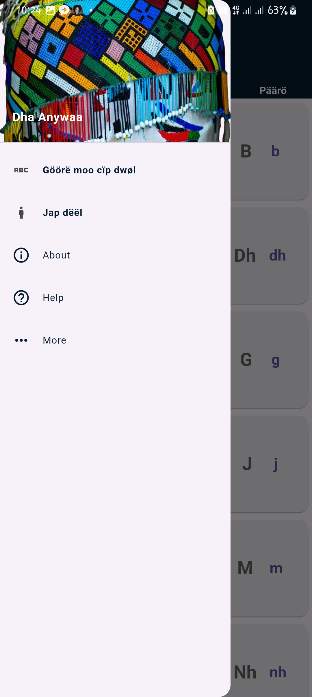

Are you struggling to read in Dha Anywaa and seeking guidance? If so, you're in the right place!
This website introduces an innovative Dha Anywaa app designed to take you from zero to hero in reading Dha Anywaa.
The app is carefully crafted to provide an effective learning experience tailored to your needs.
Immerse yourself in the rich culture of the Anywaa people as you embark on this language learning journey.
Gain insights into their traditions, heritage, and the unique characteristics of the Dha Anywaa script.
Understanding the cultural context enhances your learning experience,
making it not just about language acquisition but also a journey into the vibrant world of the Anywaa people.
Join us on this exciting adventure of linguistic exploration and cultural discovery.
Elevate your reading skills
in Dha Anywaa with our user-friendly app and delve into the fascinating heritage of this remarkable community.
Start your transformative learning journey today!
Introduction
The Anyuak, also known as Anyuaa and Anywaa, are a Luo Nilotic ethnic group inhabiting parts of East Africa.
The Anuak belong to the larger Luo family group. Their language is referred to as Dha-Anywaa.

They primarily reside in the Gambela Region of western Ethiopia, and South Sudan.
The Anuak are a Nilotic people. They have lived in the area of the Upper Nile for hundreds of years and consider their land to be their tribal land.
Unlike other Nilotic peoples in the Upper Nile, whose economies are based on raising cattle, the Anuak are herdsmen and farmers.
They are believed to have a common origin with their northern neighbors, the Luo and Shilluk. Also, they share a similar language with their neighbors to the south, the Acholi.
The Anywaa language comprises 29 alphabets, and mastering it is incredibly straightforward with the assistance of this app. Dive into an engaging learning experience where the simplicity of the language comes to life. Follow along with our app to effortlessly grasp the intricacies of the Anywaa language, making your language-learning journey both enjoyable and rewarding!
About the app
This is a Dha Anywaa app designed by a university student to assist individuals in learning to read the Anywaa language.
It is user-friendly, featuring both pictures and audio elements to enhance the learning experience.
Geared towards absolute beginners, the app guides users through each step, facilitating the process of reading in Dha Anywaa.
The application was developed by a university student named Oriemi Obang Oriemi, aiming to support those interested in acquiring reading skills in Dha Anywaa.
Dha Anywaa is a language belonging to the larger Luo family group, primarily spoken in East Africa (Ethiopia, South Sudan...).
It possesses its own set of alphabets and unique rules. This mobile application focuses on reading alphabets, words, and sentences in the Anywaa language.
First Page
The initial page of the app as you can see emphasizes the 29 both uppercase and lowercase alphabets of dha anywaa.
You can start by reading it and if you are completely begginer and don't know how to pronounce it just click on the letter and it will pronounce to you.
Second Page
The Second page focuses on words and their corresponding images, utilizing individual letters to form words.
This is really awosome as it contains words and their corresponding pictures and audio.
You can start by reading the word, and if you are not sure tap on the picture and it will read it to you.
Third Page
The third page centers around constructing sentences based on the words introduced in page 2.
Again by clicking on the sentence will read it to you.
Fourth Page
Lastly, the fourth page involves testing the knowledge acquired from pages 1, 2, and 3.
Read the instruction carefully and click on the answer that you think is the right one.
If your answer is right it will show green, if your answer is wrong it will show red and at the same time shows you the right answer in green.
To go to the next page you can swipe up or click the button labled poodhi and it will take you to the next page.
You can do the opposite to go to the previous page swipe down or click on the button to the bottom left.
Side Bar
The side bar contains additional pages including the vowel letters in dha anywaa, body parts, about section and help section
Dha anywaa vowel letters
The Dha Anywaa vowels are further divided into two categories: those pronounced with the throat fully open and those articulated with the throat partially open.
Human Body parts in dha anywaa
This section is about body parts in dha anywaa
Result page
This is the page that shows you, your result when you complete the test.
The app ensures a guided learning experience, eliminating the need for external guidance or someone to read aloud.
If a user forgets how to read a word or letter, a simple click of a button prompts the app to pronounce it.
The app is entirely free, allowing anyone interested in learning or improving reading skills in Dha Anywaa to access and utilize it without any cost.
How to get the app
If you are eager to embark on a journey of learning Dha Anywaa and are ready to take the first step, simply follow the link below to download our app on the Play Store.
Get ready to unlock a world of language proficiency and cultural richness at your fingertips!
If you want to learn more about dha anywaa, there is dedicated channel on youtube called Anywaa Enlightenment that teaches about the anywaa culture, the anwyaa language and more click here to visit